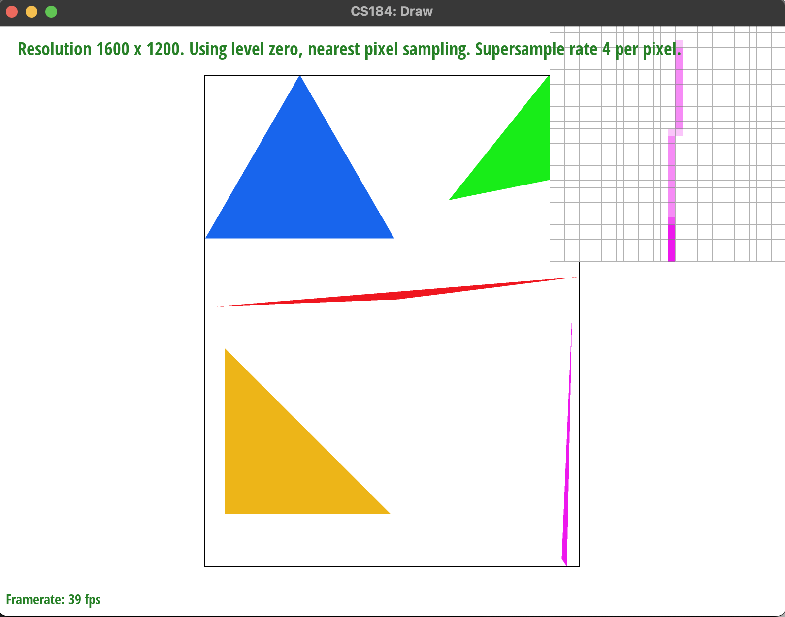
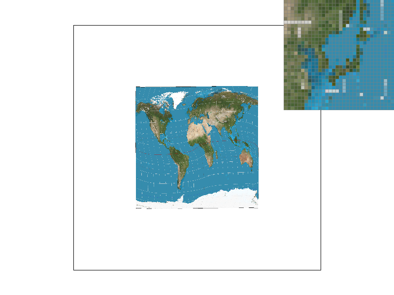
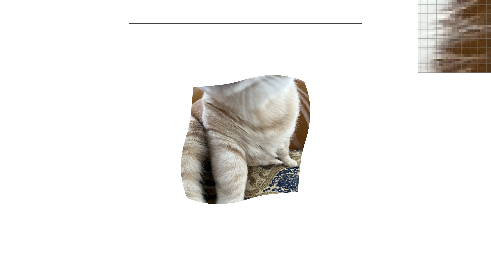
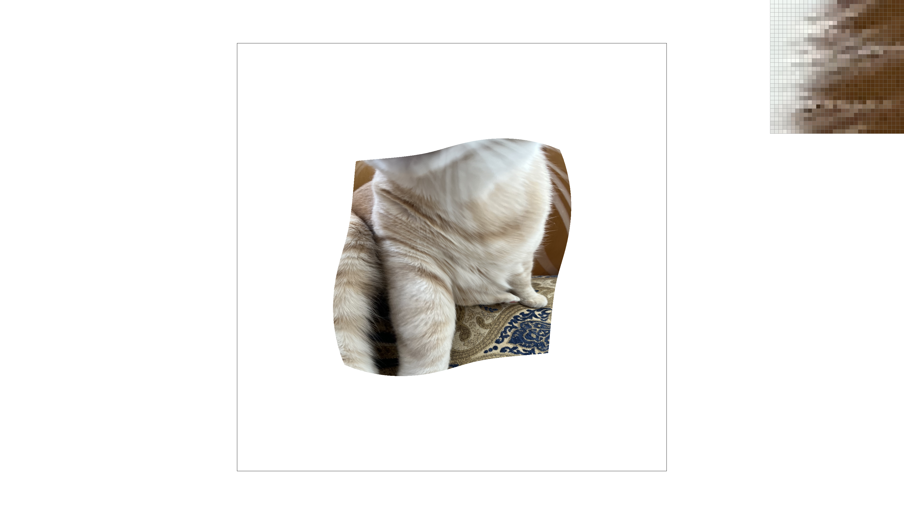

Give a high-level overview of what you implemented in this homework Think about what you've built as a whole. Share your thoughts on what interesting things you've learned from completing the homework.
The original unoptimized algorithm first finds the bounding box based on the minimum/maximum x and y coordinates of the triangle. Then, it loops through each pixel in the bounding box and tests if the center point is inside the triangle, using a series of three cross products to determine the relative orientation of each sample point to each triangle side and its opposite vertex. If the sample point is determined to be in the correct 3 half-planes, then the pixel is filled with the input color.
The optimized algorithm does not use the bounding box or the half-plane technique to sample points. Instead, it first sorts the vertices from least to greatest y-coordinate. Then, it finds the sample pixels corresponding to the least and greatest y-coordinates and loops through them. At each sample y-coordinate, we then calculate the contiguous interval of pixel sample points that lay within the triangle. To do this, we first compare to the y-coordinate to the center vertex to determine which sides of the triangle bound the current horizontal slice. Then, we use the half-plane/cross product formula to evaluate the two bounding triangle sides at the given sample y-coordinate to determine the bounds on the x-coordinates. We then find the indices of the pixels that correspond to these coordinates and fill between them.
This reduces the algorithm from performing three cross products for each pixel in the bounding box to performing two cross products for each row of the bounding box, which significantly reduces the computation. Furthermore, the bounding box of a triangle is at least twice the area of the triangle itself, so we expect the unoptimized algorithm to resolve at least twice as many pixels as the optimized algorithm, which only deals with pixels in the triangle.
Below we include tables of timings for relevant SVG files. On the device these were tested on, we observed 1,000,000 clock ticks per second.
| SVG | Unoptimized Clock Ticks | Optimized Clock Ticks |
|---|---|---|
| test3.svg | 13,812 | 3,687 |
| test4.svg | 924 | 224 |
| test5.svg | 2,527 | 358 |
| test6.svg | 1,632 | 338 |
We also implemented the optimized algorithm for supersampling, and we include tables of timings below at a sample rate of 16 per pixel.
| SVG | Unoptimized Clock Ticks | Optimized Clock Ticks |
|---|---|---|
| test3.svg | 158,209 | 13,043 |
| test4.svg | 13,589 | 2,573 |
| test5.svg | 39,948 | 7,043 |
| test6.svg | 20,305 | 4,919 |
Depending on the shapes of rasterized triangles, we observe speedup of at least 4x and up to 10x.
We can also observe adherence to the OpenGL edge rules since we are inclusive on the left and exclusive on the right for intervals on both axes involving coordinates that lie exactly on a pixel sample coordinate.
For supersampling, we expanded our sample buffer by a factor of the sample rate. We then needed to modify our formula to calculate xy-coordinates from sample coordinates and from xy-coordinates into sample coordinates. The rest of the triangle rasterizing code was able to remain the same. Finally, we needed to modify the resolve_to_framebuffer function to average the colors of each pixel of the framebuffer. Effectively, this is a form of filter downsampling that aids with antialiasing and reduces jaggies by smoothing the signal.
For lines and points, we had to modify fill_pixel to fill the entire set of samples corresponding to a pixel coordinate.
|
|

|
|
|
|
We can see that without supersampling the triangle misses many pixels which leads to floating pixel islands. When supersampling, we get subpixels that intersect the triangle which helps avoid the floating pixel island problem and instead blends the intensity of color as smoothly as possible given the resolution.
Triangles are convex. As such, any point inside of them (or on the boundary) can be expressed as a convex combination of their vertices. That is, any point $P$ inside $\triangle ABC$ can be expressed in the form $\alpha A + \beta B + \gamma C$, where $\alpha + \beta + \gamma = 1$. The name of this format is barycentric coordinates.
It is easy to convert from barycentric coordinates $(\alpha, \beta, \gamma)$ to cartesian coordinates simply by evaluating the sum $\alpha A + \beta B + \gamma C$. The other direction is a bit more tricky: we have a system of three equations and three unknowns:
The benefit of this approach is that we can generalize the approach to values. Suppose we have some assigned values, e.g. colors, at the vertices, called $V_A$, $V_B$, $V_C$. Then the value we assign at $P = (\alpha, \beta, \gamma)$ is $\alpha V_A + \beta V_B + \gamma V_C$. For example, if $P = (1, 0, 0) = A$, then $V_P = V_A$. The result is that we can linearly interpolate values, which is nice for producing gradients. See the figure below.
Pixel sampling enables us to apply textures to images by mapping each point $(x, y)$ on an image to a corresponding point $(u, v)$ on the texture map. Since pixels and texels are discrete, and the maps have potentially different sizes, we must be careful about how we assign pixel colors based on texels. Two common pixel sampling methods are nearest and bilinear sampling. In nearest neighbor sampling, the color of the pixel on the texture is the color of the nearest corresponding texel. Bilinear sampling assigns colors as a weighted average of the colors of the four nearest texels surrounding the corresponding point. The weights are given by the distances between the mapped point and surrounding pixels.
An example of these sampling methods is as follows.
1 |
16 |
|
Nearest |
 | |
Bilinear |
At 1 sample per pixel, there is a clear improvement of bilinear over nearest, where the white lines get blended quite poorly (the color change from terrain to white occurs over just one pixel, whereas in the bilinear case it is more gradual).
At 16 samples per pixel, nearest sampling has greater variation in the colors along the white contours than bilinear sampling. That is, the texture is sampled more uniformly in the bilinear case, resulting in smoother color changes and avoids systematic texture recoloring problems.
An example of a considerable difference between the two methods is with magnification. Magnifying an image by 2x will lose considerable information using nearest sampling, since it will select every other texel as in the original. On the other hand, bilinear interpolation will incorporate information from surrounding texels, and as such would produce smoother transitions and less noticeable artifacts.
Level sampling uses mipmaps to reduce aliasing. When using traditional texture sampling, an extreme rotation of a texture relative to the camera can result in pixels on the screen that overlap multiple texels on the texture. This results in aliasing, since our sample rate becomes much larger than the resolution of the texture. To resolve this, we can generate filtered mipmaps by averaging chunks of texels on the original texture such that we can have pixels that overlap a low constant number of texels by picking a better suited mipmap.
To do this, we estimate the area on the texture represented by the pixel by finding the distance to adjacent pixels on the uv map, and approximating with a square with side length equal to the larger distance. By finding the log2 of this area, we can then estimate the mipmap that best reduces aliasing by rounding the log to the nearest integer. To create smoother transitions for animation, we can alternatively interpolate between two adjacent mipmaps using this log value.
Overall, we end up with three techniques, which are "level zero", "nearest", and "linear". Level zero is the fastest, since it requires no math and a single texture lookup. Nearest and linear require similar computation, but linear requires two texture lookups while nearest only requires one texture lookup. Both nearest and linear require mipmap generation and storage, which will require 33% more memory. Linear has the most antialiasing power and is most effective for animation, but nearest seems to be a good approximation. Level zero can result in significant aliasing.
|
|

|
|

|
|
We can see that the antialiasing is apparent for the fur at the edges of the cat, and we achieve the least aliasing for nearest level sampling and bilinear pixel sampling.
If you are not participating in the optional art competition, don't worry about this section!